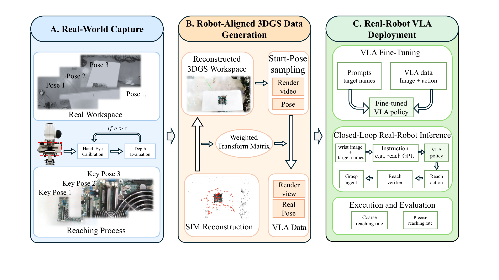
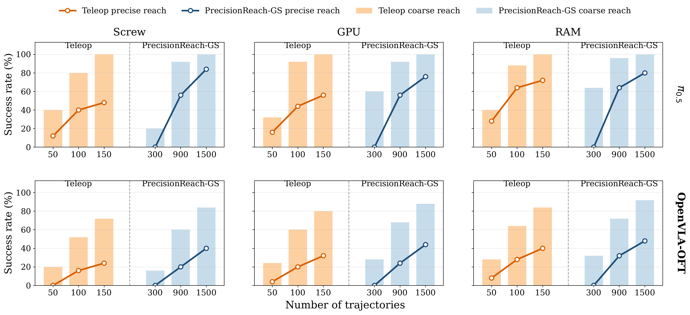
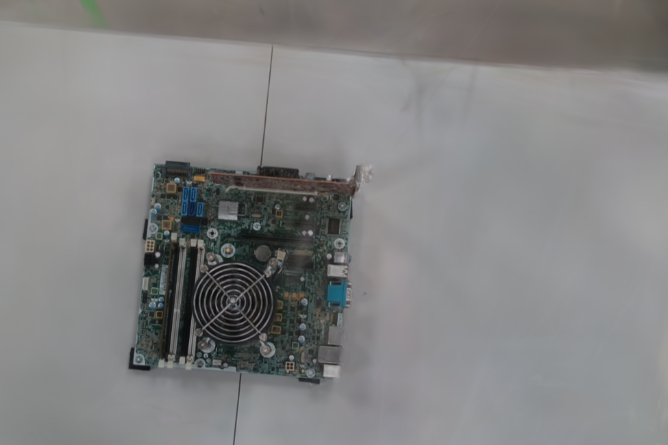
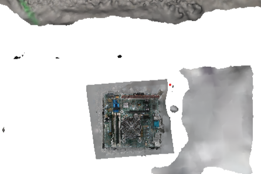

Capture and reconstruct
Short real-world captures preserve the workspace appearance, clutter, and target layout in a photorealistic 3DGS scene.
Robot learning / 3D Gaussian Splatting
Robot-Aligned 3D Gaussian Splatting for Precise Reaching with Wrist-Camera VLA Policies
A lightweight real-to-sim-to-real pipeline that turns one reconstructed workspace into scalable, robot-aligned wrist-camera demonstrations for precise pre-contact reaching.
Dense electronic assemblies leave little room for camera-action mismatch. Teleoperation is slow and noisy, while full digital twins demand meshes, collision geometry, contact models, and extensive setup.
Research question
Can a lightweight 3DGS reconstruction train a wrist-camera VLA policy to reach small targets precisely?
Efficient robotic data collection remains a major bottleneck for vision-language-action policy learning, especially when tasks require accurate end-effector positioning and reliable camera-action alignment. PrecisionReach-GS focuses on the pre-contact reaching stage and reconstructs the real workspace with 3D Gaussian Splatting. It renders diverse wrist-camera observations from robot-aligned poses, pairs them with smooth reaching trajectories, and uses the resulting data to fine-tune VLA policies.
Experiments in motherboard disassembly show precise wrist-camera-only reaching without requiring an external side-view camera in this task setting. The pipeline reduces active human collection effort, produces smoother supervision, and avoids building a complete physical digital twin.
The method reconstructs the scene once, aligns it with the robot frame, then renders visual-action pairs along feasible reaching trajectories.

Open full-resolution workflow ↗Short real-world captures preserve the workspace appearance, clutter, and target layout in a photorealistic 3DGS scene.
A weighted similarity transform maps the reconstruction into the robot frame. Feasible start poses and smooth trajectories produce synchronized wrist views, states, and actions.
The VLA policy predicts closed-loop reach actions from wrist images and language instructions. A lightweight verifier decides when the target region has been reached.
Camera motion stays tied to feasible end-effector motion, so every rendered wrist observation receives a matching robot-frame action label.
Tests use a physically repositioned motherboard, so the policy must tolerate moderate target-location changes rather than replay a fixed pose.
Each value averages screw, GPU, and RAM results. Every target uses 25 real-robot trials.
π0.5 trained with 1,500 generated trajectories.
The target requires more wrist rotation near the interaction pose.
Wrist-camera-only deployment in a repositioned workspace.

Real-robot performance by data scale ↗Select a target to watch the wrist-camera VLA policy close the loop on a physical Franka robot. Videos play at 16× speed.
Closed-loop reaching under a changed target-board location.
With 1,500 generated trajectories, the policy recovers the target neighborhood in 17 of 30 trials even when the motherboard begins outside the wrist camera’s field of view.
Targets, clutter, and workspace appearance remain visible in the Gaussian representation, while conventional mesh reconstruction struggles with thin and reflective components.


The repository includes the robot-frame alignment, dataset preparation, trajectory conversion, and browser-based Gaussian Splat data-generation tools used by the pipeline. Large datasets and trained models remain external.
Fit a weighted COLMAP-to-robot similarity transform and export aligned camera poses for the viewer.
Prepare robot-pose-aware inputs and convert recorded camera paths into end-effector supervision.
Inspect aligned splats, sample reachable starts, build paths, and record synchronized visual-action data.
@unpublished{wang_precisionreach_gs,
title = {Robot-Aligned 3D Gaussian Splatting for Precise Reaching
with Wrist-Camera VLA Policies},
author = {Wang, Zuoxu},
note = {Manuscript under review},
url = {https://github.com/001-Wang/PrecisionReach-GS}
}